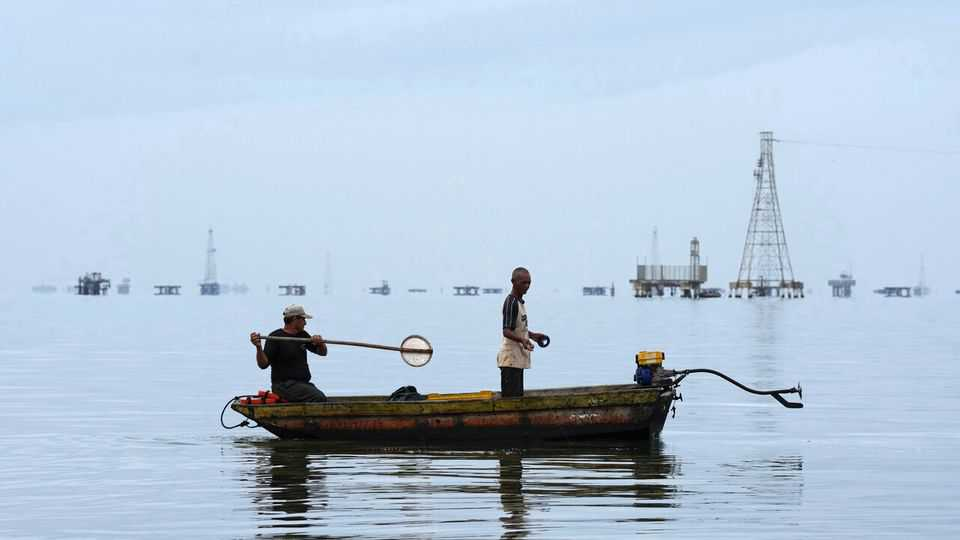

Donald Trump’s Venezuela deal is bold but dodgy
Worse, it creates incentives to block democracy

Sep 3rd 2026
Oil made Venezuela rich. For decades it helped fund a stable democracy with the highest living standards in Latin America. The country was pumping 3.4m barrels a day when Hugo Chávez, a left-wing populist, was elected in 1998 on a promise to redirect petrodollars to the poor. Instead, under his corrupt, incompetent regime, the flows of oil and cash largely dried up. Under his chosen successor, Nicolás Maduro, the state went on a money-printing spree, sparked hyperinflation and drove a quarter of Venezuelans to emigrate.
Eight months ago, when Donald Trump had Mr Maduro snatched by special forces and dumped in a Brooklyn jail, Venezuelans cheered. Now Mr Trump has made a deal with the ex-despot’s deputy, Delcy Rodríguez, that both sides say will revive Venezuela’s oil industry. Mr Trump called it the “BIGGEST OIL DEAL IN WORLD HISTORY”. He crowed that it would give America “energy dominance” (after his war of choice in Iran interrupted global supplies). The deal is certainly bold. It is also ugly.
The regime has given North American Blue Energy Partners (NABEP), a private oil firm that was already the second-largest operating in Venezuela, the concessions to 17 oilfields containing some 65bn barrels. America, via the Pentagon, has been given, in exchange for its backing, a 35% stake in nabep and rights to its output. For the next century this guarantees America the right of first refusal to buy from oilfields which hold a fifth of Venezuelan oil reserves, with some of those purchases at a discount (see Americas section).

The idea is that nabep will pump more oil and Uncle Sam’s involvement will give other investors confidence to sink long-term capital into a country they previously shunned. Ms Rodríguez, now Venezuela’s Trump-approved interim president, says the project could eventually yield more than 1.5m barrels per day. If she is right, it would push Venezuela’s output to 2.5m, three-quarters of pre-Chávez levels.
However, she offers no clear timeline, nor much hint of who will stump up the staggering amounts of cash such an expansion would require. And the deal comes with warning lights flashing red. First, it was negotiated with an illegitimate regime that stole the most recent election. Second, Mr Trump’s chosen private partner, Alejandro Betancourt, NABEP’s boss, is reviled by some in Venezuela for the moral flexibility that let him get rich working with the regime. Third, Mr Trump will surely enrage Venezuelans with his imperialist bragging: on September 1st he said he would take all of the country’s oil.
Any future, freely elected government of Venezuela might question a deal which gives America so much control of the country’s oil. That fact will make investors hesitate. Oil majors remain wary, though Chevron, which was already in Venezuela, has just announced a separate $7bn investment.
Worse, cash and tax revenue from the deal create incentives for powerful people to block Venezuela’s transition to democracy. Mr Betancourt, who is well-connected in both Caracas and Mar-a-Lago, has every reason to whisper to Mr Trump that a rush to free elections could spoil his oil bonanza. Ms Rodríguez will no doubt reinforce this message.
In background briefings American officials insist that Venezuela’s transition to democracy will continue. And some within the administration, such as Marco Rubio, the secretary of state, clearly understand that a democratic Venezuela is both desirable and in America’s interest. So there is still hope. America could in theory use its power over NABEP to press for transparent competition in Venezuela’s oil industry. This, in turn, would allow the opposition to campaign on a platform that does not undermine the deal. But all this depends on Mr Trump. Ominously, in public he has started to refer to Ms Rodríguez as Venezuela’s “president-elect”. ■